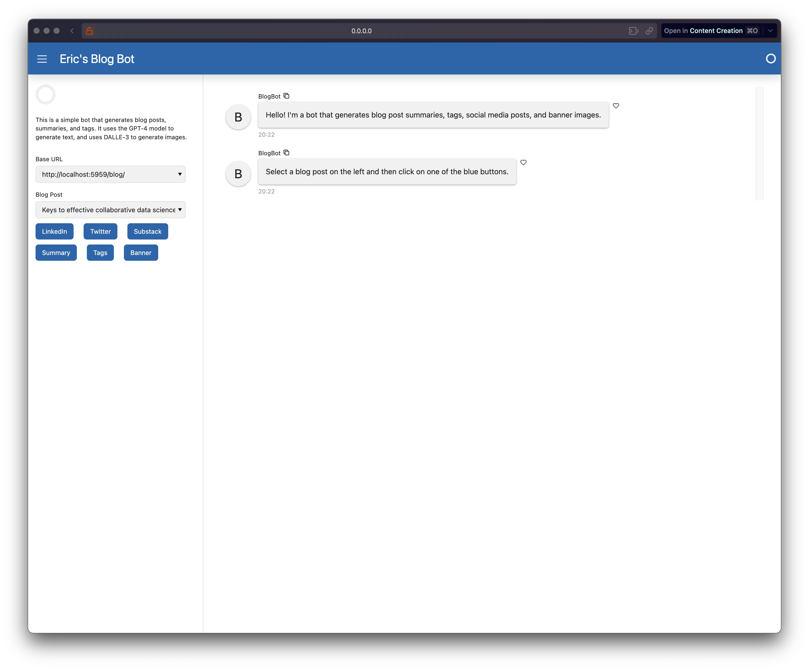
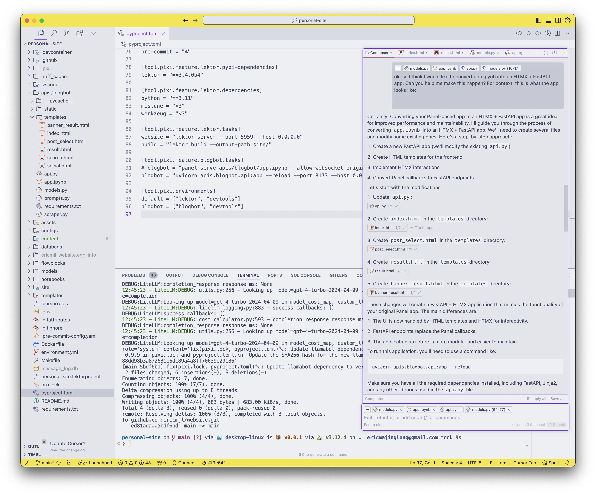
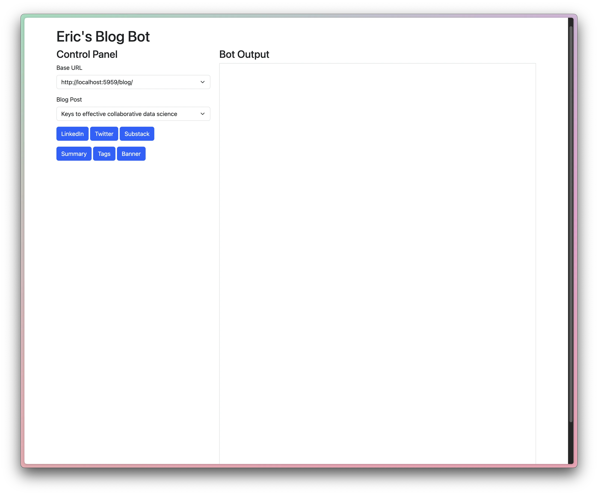
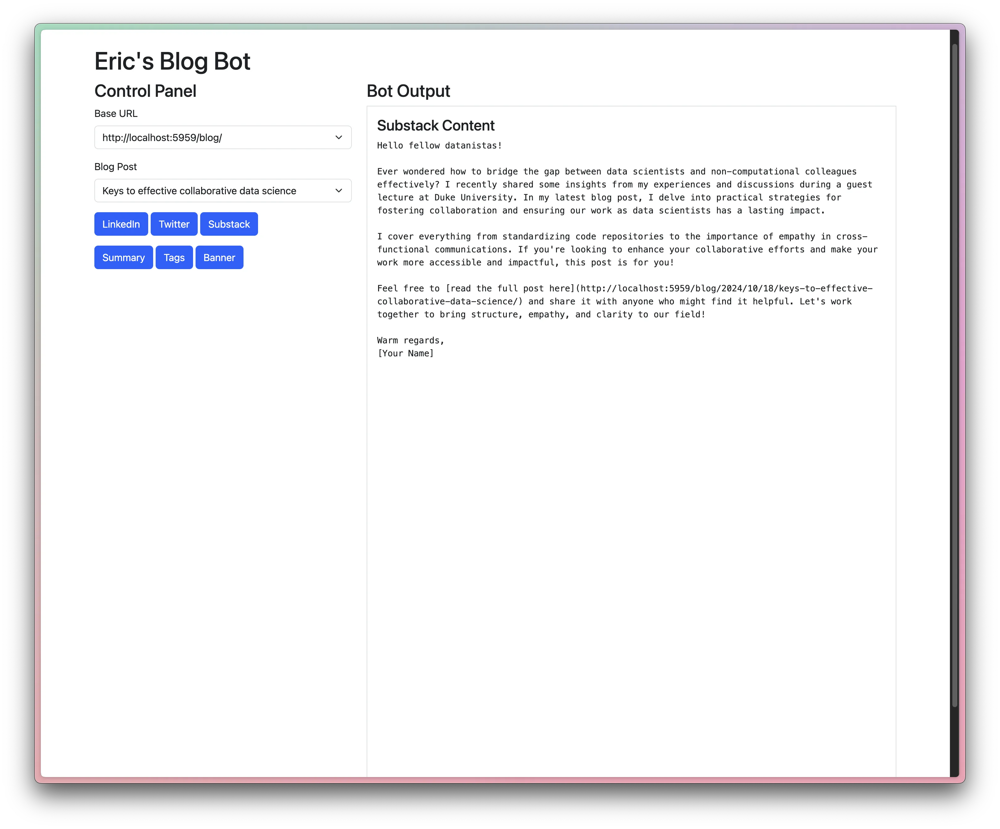
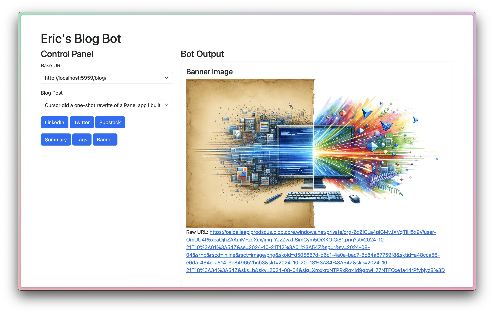

Eric J Ma's Website
written by Eric J. Ma on 2024-10-20 | tags: coding fastapi htmx automation design prototype development patterns assistance productivity
In this blog post, I share my experience using Cursor to transform a sluggish Panel app into a sleek HTMX + FastAPI application. I detail how AI-assisted coding not only sped up the process but also enhanced my understanding of web development. Despite my limited skills in this area, the AI tools helped me prototype faster and learn valuable lessons. I also reflect on the importance of critically assessing AI-generated code to improve one's coding instincts. Curious to see how it turned out and what insights I gained?
Today, I used Cursor to convert a Panel app into HTMX + FastAPI and it was pretty amazing sight to see it in action.
Blogbot: My home-built tool for writing social media posts
I built blogbot because I'm too lazy to write social media posts. I'd rather it be a one-click affair. So I did what any good software developer does when they need to automate a task: build a tool to automate it.
Was it worth the time? I'll let XKCD speak for me:

In any case, the UI I built was in Panel, and it looks like this:

As you can tell, with one click of a button, I can grab the contents of my blog and use it to synthesize LinkedIn posts, Twitter posts, Substack (newsletter) posts, summaries, tags, and banner images.
That said, the Panel app always felt a little sluggish relative to other FastAPI + HTMX apps that I'd built before. So the thought came to mind: what if I rewrote it?
One-shot rewrite
So I did this: I pointed Claude 3.5 sonnet to the notebook in which I implemented the Panel app and gave it the following instruction:
ok, so I think I would like to convert app.ipynb into an HTMX + FastAPI app. Can you help me make this happen? For context, this is what the app looks like. (screenshot pasted, which is what I had above)
Claude went to town! Within one prompt, I had all 5 necessary files created on the filesystem. Here's a screenshot of the Composer's state when I ran it:

I stood up the FastAPI web server, and voila:

And this is what it looks like with content rendered:

Finally, this is what it looks like with banner images:

Reflections
In the month that I've subscribed to Cursor, I've gradually gotten used to how to use it as a tool to 10X my ability to produce prototypes. (I'm being careful with my words here -- I wouldn't go so far as to claim a 10X productivity boost, but I am much faster at standing up an MVP.) This was yet another example of how using AI-assisted coding got me where I wanted in a very short amount of time. I remember my reaction when I first saw the UI, and it was one of massive surprise!
This being the third full-stack app that I've built using AI-assisted coding, I'm starting to see a pattern of usage that I think is a productive path forward. For someone who is in my shoes -- skilled programmer but not necessarily in one sub-genre of programming (web development), AI-assistance is a great way to advance a prototype forward.
But being relatively unskilled in web development, there are many patterns of coding that I'm unaware of, unlike in regular Python programming for data science. For example, what is a better pattern for interfacing with a database -- through raw SQL or through an ORM? If I'm using HTMX with Jinja templates, how much data processing logic should be shoved into the Jinja template and how much should be handled by HTMX instead? These are questions for which I have no strong patterns to anchor my review of the code, and I risk AI-generated code biting me back later in the future.
But on the flip side, by reviewing AI-generated code, and doing personal introspection about what is difficult to handle in that code, I'm also sharpening my own sense of taste. It's this last point that I want to provide an admonishment on: if you omit the step where you critically assess AI-generated code, you pass up the chance to skill up!
And again on the positive side, LLMs are producing code that does follow more or less sane practices left on the internet by other coders. By critically assessing AI-generated code and applying principles that I've learned writing programs before, I can, nonetheless, build and refine my judgment calls on what to accept and what to reject.
Cite this blog post:
@article{
ericmjl-2024-cursor-did-a-one-shot-rewrite-of-a-panel-app-i-built,
author = {Eric J. Ma},
title = {Cursor did a one-shot rewrite of a Panel app I built},
year = {2024},
month = {10},
day = {20},
howpublished = {\url{https://ericmjl.github.io}},
journal = {Eric J. Ma's Blog},
url = {https://ericmjl.github.io/blog/2024/10/20/cursor-did-a-one-shot-rewrite-of-a-panel-app-i-built},
}
I send out a newsletter with tips and tools for data scientists. Come check it out at Substack.
If you would like to sponsor the coffee that goes into making my posts, please consider GitHub Sponsors!
Finally, I do free 30-minute GenAI strategy calls for teams that are looking to leverage GenAI for maximum impact. Consider booking a call on Calendly if you're interested!